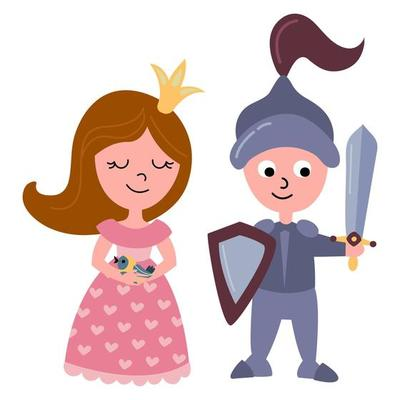

Honza byl s velkou slávou uvítán na zámku nejen Veronikou, ale i jejím nově vyléčeným otcem. Princezna Veronika z něj byla nadšená a ještě ten den se vzali. Svatba byla
velkolepá, byli na ni pozváni důležití lidé ze všech zemí světa. Po svatbě se společně odstěhovali na klidné místo na venkov a
žili - jak už to v pohádkách bývá - šťastně až do smrti.

Tedy to by bylo, vše dobře dopadlo, láska jen vzkvétá a plán na Valentýna má Honza zajištěn. Honza ale není jediný, kdo má oči jen pro Veroniku...